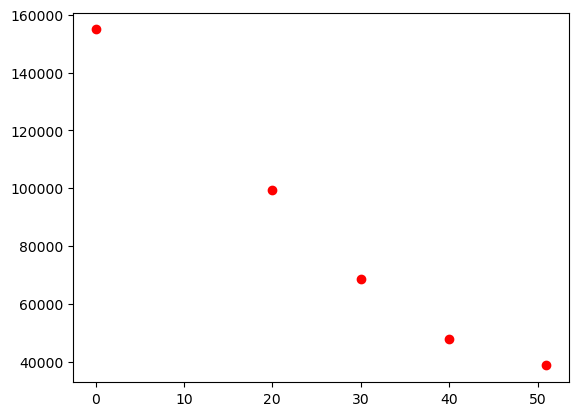
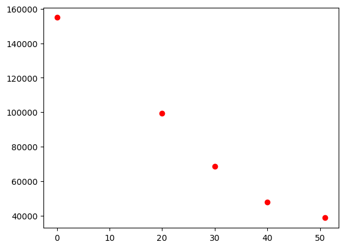
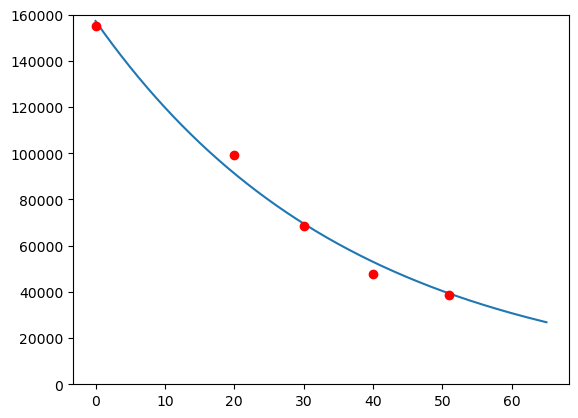

import matplotlib.pyplot as plt
import numpy as np
år = [0, 20, 30, 40, 51]
gårdar = [154977, 99382, 68539, 47688, 38633]
plt.plot(år, gårdar, "ro")
plt.show()
Torodd F. Ottestad
January 1, 2023
Her er eit forslag til løysing av våreksamen i S1 2022. I del 2 er oppgåvene stort sett løyst i Python eller CAS.
Gje gjerne ein lyd om du ser feil, så skal eg fiksa det 😊
Miniatyrbilete: Exam icons created by Freepik - Flaticon
Eksamenssettet finn du hos UDIR: Finn eksamensoppgaver
Skriv så enkelt som råd
\[ \begin{align*} \left(2a\right)^{-1}\cdot \left(\frac{b}{2}\right)^{-3}\cdot \left(a\cdot b\right)^3 \end{align*}\] —
Tabellen nedanfor viser talet på gardsbruk i Noreg for nokre gitte årstal.
| År | Tal gardsbruk |
|---|---|
| 1969 | 154 977 |
| 1989 | 99 382 |
| 1999 | 68 539 |
| 2009 | 47 688 |
| 2020 | 38 633 |
Bruk opplysningane i tabellen, og bestem ein modell som du meiner eignar seg til å seie noko om talet på gardsbruk i Noreg i åra framover. Grunngi valet ditt av modell.
import matplotlib.pyplot as plt
import numpy as np
år = [0, 20, 30, 40, 51]
gårdar = [154977, 99382, 68539, 47688, 38633]
plt.plot(år, gårdar, "ro")
plt.show()
from scipy.optimize import curve_fit
def f(x, a, b):
return a*b**x
K, E = curve_fit(f, år, gårdar)
a, b = K
x_verdiar = np.linspace(0, 65, 1000)
plt.plot(x_verdiar, f(x_verdiar, a, b))
plt.plot(år, gårdar, "ro")
plt.ylim([0, 160000])(0.0, 160000.0)
Gårdar i 2060:
f(91) = 13248x = 0
f0 = f(x, a, b)
f1 = f(x+1, a, b)
while abs(f1-f0) >= 1000:
x +=1
f0 = f(x, a, b)
f1 = f(x+1, a, b)
print(x)
print("f0", f0)
print("f1", f1)
print(f1-f0)
print(f(52, a, b))
print(f(53, a, b))53
f0 37224.129686867855
f1 36225.744558823484
-998.3851280443705
38250.03040847806
37224.129686867855